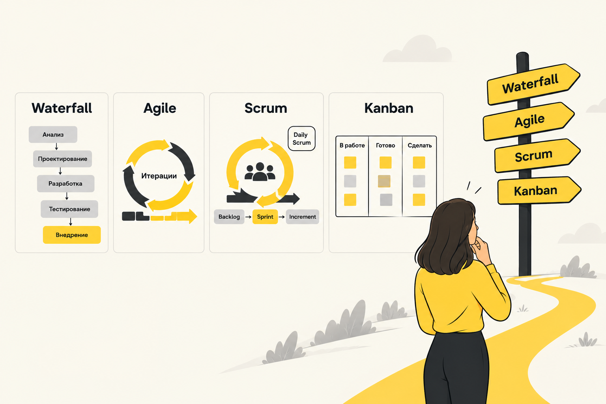
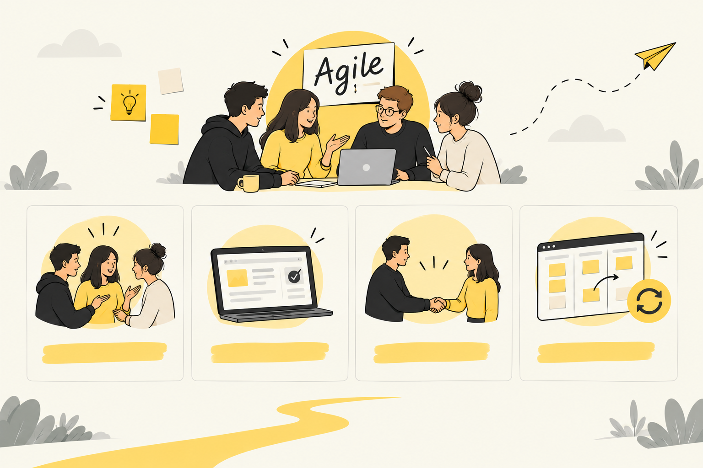
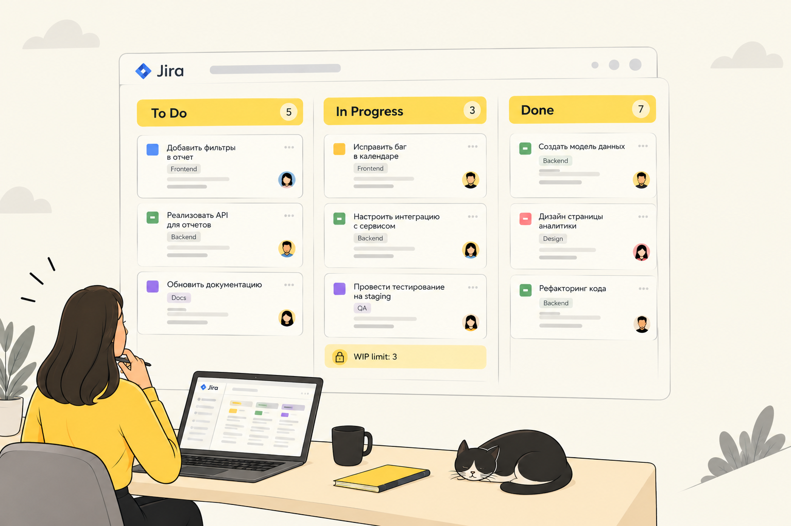
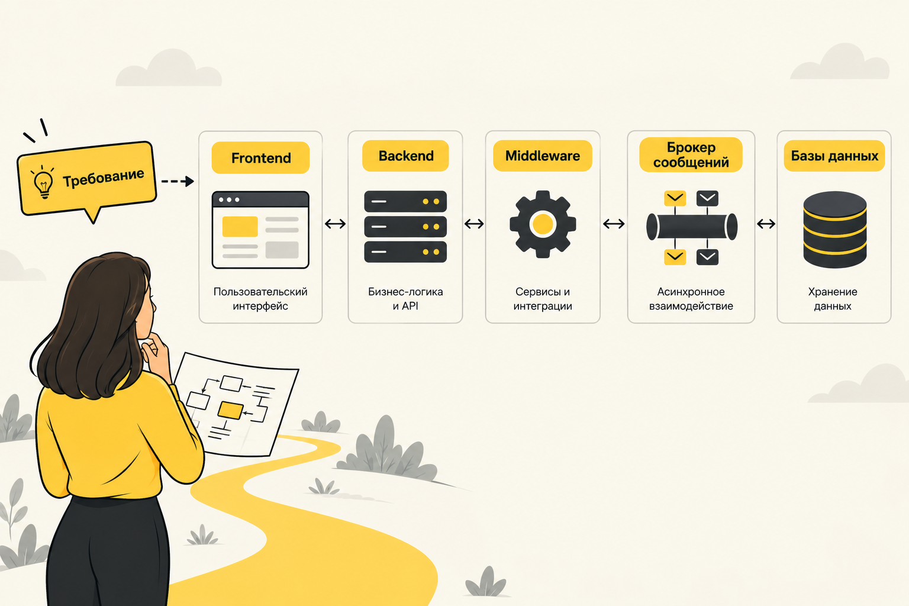
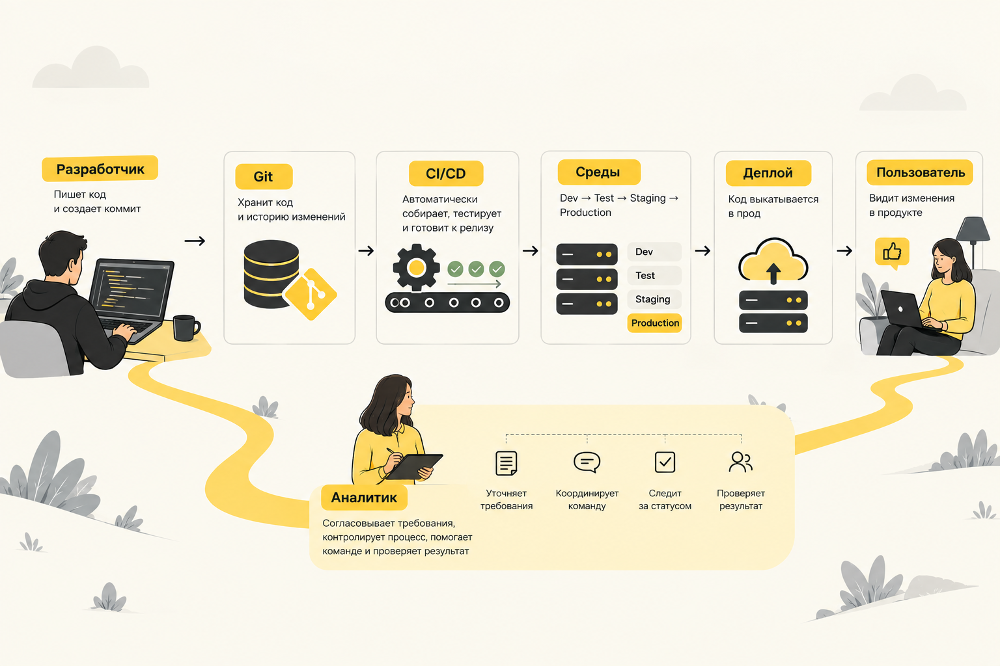

Итерационная разработка, Agile, Scrum, Kanban. Архитектура: фронтенд, бэкенд, middleware, брокеры, базы данных. Релизный цикл и CI/CD.
Сформировать у аналитиков целостное представление о жизненном цикле разработки ПО, современных методологиях, архитектурных компонентах и процессах доставки ценности пользователю.
Понимать различия между Waterfall, Agile, Scrum и Kanban. Знать, когда что применять.
Различать слои системы: frontend, backend, middleware, брокеры, БД. Понимать, где "живёт" требование.
Знать путь кода от идеи до пользователя. Понимать CI/CD, UAT, Feature Flags.
От каскадной модели Waterfall до гибких подходов Agile, Scrum и Kanban. Как выбрать правильный фреймворк для команды и проекта.

Разработка ПО прошла путь от жёсткого планирования к гибкости и адаптивности.
Последовательное выполнение этапов: Анализ → Дизайн → Разработка → Тестирование → Внедрение. Требования фиксируются "на берегу".
Разбиение проекта на короткие циклы (итерации). По итогам каждой создаётся работающий инкремент продукта.
Agile — семейство подходов, основанных на ценностях и принципах Agile Manifesto, подписанного 17 независимыми экспертами в 2001 году.

Фреймворк для управления продуктом в условиях неопределённости. Работа организована в фиксированные отрезки времени — спринты (1–4 недели). Нажмите на термин, чтобы узнать подробнее ↓
Метод визуализации работы и управления непрерывным потоком задач. Нет фиксированных спринтов — есть поток создания ценности.

Аналитик заранее (на груминге) описывает User Story, рисует экраны в Figma, описывает API-контракт с бэкендом. На планировании команда берёт это в двухнедельный спринт. В конце спринта на Review аналитик показывает бизнесу работающую кнопку на тестовом стенде, получает фидбек и сразу закладывает доработки в следующий спринт.
Аналитик сопровождает крупную ERP-систему на заводе. У него нет спринтов. Утром приходит заявка: "Сломалась печать накладных". Аналитик заводит задачу на доску, назначает приоритет "Высокий", разработчик берёт её в работу (WIP-лимит позволяет). Через 4 часа баг починен и выкачен на прод. Аналитик закрывает задачу и берёт следующую из бэклога.
Frontend, Backend, Middleware, брокеры сообщений и базы данных. Где "живёт" ваше требование и как корректно его сформулировать.

Три ключевых слоя, через которые проходит любое требование.
Простыми словами: как системы общаются между собой и где хранят информацию.
Представьте почтовое отделение. Одна система кладёт "письмо" (сообщение) в ящик, а другая забирает его, когда будет готова. Даже если получатель "отошёл" — письмо не потеряется, его доставят позже.
Kafka — для огромных потоков данных (логи, события). RabbitMQ — для классических задач между сервисами. IBM MQ — в крупных банках и госсекторе.
Это как аккуратный Excel с множеством связанных таблиц. Каждая запись — на своём месте, ничего не потеряется. Идеально, когда важна точность и связи: деньги, заказы, пользователи.
Это как гибкая картотека, куда можно класть что угодно: документы, списки, пары "ключ-значение". Работает очень быстро, но без строгой структуры. Идеально для каталогов, кэша, сессий.
Для проверки корзины и отображения товаров — синхронный REST API (пользователь ждёт). Для создания заказа и списания бонусов — асинхронная схема: фронтенд отправляет запрос, бэкенд возвращает 202 Accepted, событие OrderCreated падает в Kafka. Сервис склада и сервис лояльности независимо читают его и выполняют свою работу.
Основные данные (логин, пароль, баланс) — в PostgreSQL (строгая целостность). История просмотров товаров и сессии — в Redis (NoSQL, оперативная память, молниеносная скорость). Для передачи данных в систему аналитики маркетологов — API Gateway, трансформирующий внутренний JSON в требуемый внешний формат.
Как код попадает от компьютера разработчика до пользователя. Путь задачи через среды, автоматизация и роль аналитика в этом процессе.

Типичный путь задачи от идеи до пользователя проходит через четыре ключевые среды.
Разработчики часто сливают код в общую ветку. Каждый коммит автоматически собирает приложение и прогоняет юнит-тесты.
Код всегда в состоянии, готовом к релизу. Развёртывание на Staging — автоматически, на Prod — по кнопке (Delivery) или полностью автоматически (Deployment).
Приёмочное тестирование на Staging перед релизом
Включение фичи для 5% пользователей без релиза
Список изменений для бизнеса и пользователей
Команда разработала новый дизайн. Код уже выкачан на Production через CI/CD, но "спрятан" за Feature Flag. Аналитик заходит в админку, включает флаг для тестовой группы (5% пользователей) и смотрит в аналитику: выросли ли конверсии? Если да — флаг включается для всех. Если нет — флаг выключается, и аналитик формирует новые требования на доработку.
На Production падает критический баг: не применяется промокод. Разработчик быстро чинит код. Благодаря настроенному CI/CD пайплайну код автоматически проходит юнит-тесты, собирается и деплоится на Staging. Аналитик за 10 минут проводит экспресс-UAT, проверяет, что промокод работает и ничего не сломалось. После его апрува пайплайн автоматически выкатывает хотфикс на Production. Весь процесс занимает 40 минут вместо 2 дней.
Методологии, архитектура и релизный цикл — это контекст, в котором живут ваши требования. Понимание этого контекста превращает аналитика из "писателя ТЗ" в полноценного участника продуктовой команды.